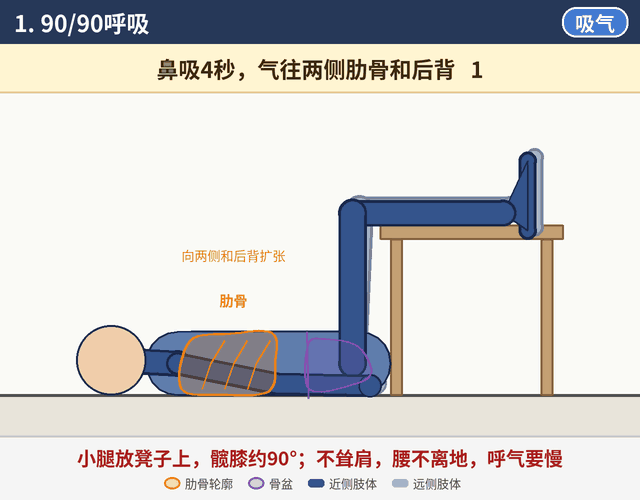
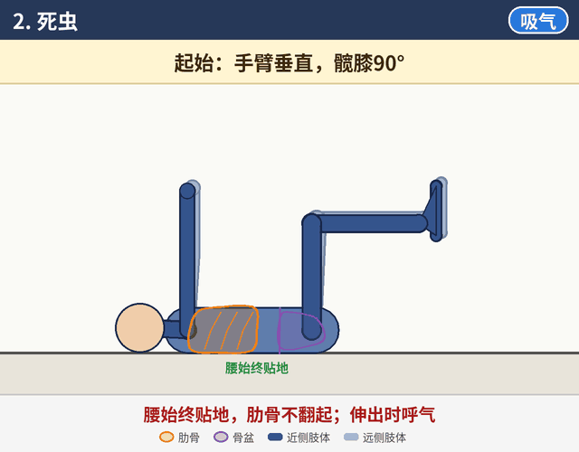
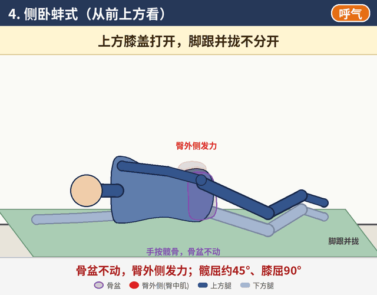
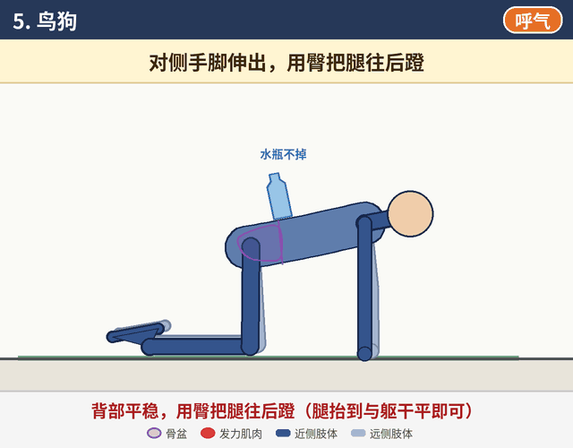
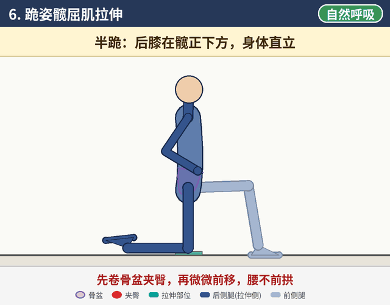
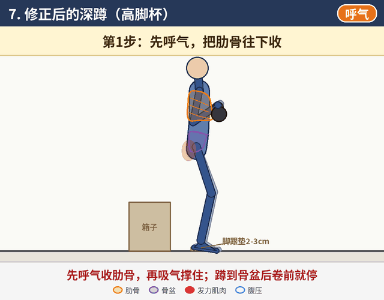

怎么看动画：深色是靠近你一侧的手脚，浅色是另一侧；橙色轮廓是肋骨，紫色是骨盆，红色是正在发力的臀肌。右上角标签提示吸气 / 呼气。动画只是示意，实际节奏以文字里的秒数为准。
建议顺序：按1至7的顺序练，先呼吸和激活，再做力量动作。
建议顺序：按1至7的顺序练，先呼吸和激活，再做力量动作。
1
90/90呼吸
呼吸 · 肋骨复位

组数次数5次呼吸 × 3-4组
姿势
仰卧，小腿放在椅子或箱子上，髋、膝都约90°。双手可以轻放在下肋骨两侧，感受肋骨的移动。
动作
- 鼻子吸气4秒，气往肋骨两侧和后背走。
- 嘴巴慢慢呼气6-8秒，感觉肋骨往下、往里沉，腰贴住地面（骨盆轻微后倾）。
- 呼完停2秒，再吸下一口。
关键点
- 吸气时不要只鼓肚子或挺胸，重点是两侧肋骨和后背撑开。
- 呼气像慢慢吹气球，一直吹到吹不动为止。
- 全程肩膀、脖子放松。
常见错误
- 耸肩。
- 腰离地（腰下出现空隙）。
- 呼气太快，没吹完就吸下一口。
2
死虫
核心控制 · 肋骨不翻

组数次数每侧6-8次 × 3组，每次4-5秒
姿势
仰卧，手臂垂直指向天花板，髋、膝都约90°。先呼一口气，让腰贴地、肋骨下沉。
动作
- 一侧手臂向头后方伸，同时对侧腿向前伸直到接近地面，伸出时呼气。
- 吸气，慢慢收回起始位置。
- 换另一侧，左右交替。
关键点
- 腰始终贴地，肋骨不翻起。
- 动作要慢，每次4-5秒。
常见错误
- 腰离地或肋骨翻起：马上缩小幅度（腿伸得高一点、手不用伸那么远）。
- 憋气。
- 动作太快、靠惯性甩。
3
臀桥
臀大肌激活

组数次数10-12次 × 3组，顶端夹臀停2-3秒；进阶：单腿臀桥每侧8次
姿势
仰卧屈膝，双脚踩地与髋同宽，脚跟离臀部约一脚半的距离，双手放在身体两侧。
动作
- 先呼气，骨盆后倾（腰贴地）。
- 脚跟下踩，臀部发力把髋抬起，直到肩-髋-膝成一条直线。
- 顶端夹臀停2-3秒。
- 慢慢放下，一节一节回到地面。
关键点
- 用臀发力而不是用腰。
- 到一条直线就停，不要再往上顶（不要拱腰）。
- 肋骨保持下沉。
常见错误
- 大腿后侧抽筋或腰酸 = 代偿（腿后侧或腰在代劳）。调整：双脚往臀部靠近一点，并加强骨盆后倾。
- 顶端拱腰、肋骨翻起。
4
侧卧蚌式
臀中肌（臀外侧）激活

组数次数每侧12-15次 × 2-3组；进阶：膝盖上方套弹力带
姿势
侧卧，髋屈约45°、膝屈约90°，脚跟并拢；头枕在下方手臂上；上方手按在髋骨上。
动作
- 脚跟保持并拢，上方膝盖向上打开，打开时呼气。
- 停一下，再慢慢合上。
关键点
- 手按髋骨，骨盆不动、不往后倒。
- 感受臀部外侧发力。
- 幅度以骨盆不动为准，不追求打得很开。
常见错误
- 骨盆或上身跟着往后翻。
- 用腰或大腿前侧发力。
- 动作太快，甩上去。
5
鸟狗
臀 + 核心稳定

组数次数每侧8次，每次停2秒 × 3组
姿势
四点跪，手在肩正下方，膝在髋正下方，背部平直。可以在腰上放一个水瓶。
动作
- 呼气，一侧手臂向前、对侧腿向后伸，腿抬到与躯干平即可。
- 停2秒。
- 吸气收回，换另一侧。
关键点
- 背部平稳，腰上的水瓶不掉。
- 用臀把腿往后蹬，而不是把腿往上甩。
常见错误
- 腿抬太高导致拱腰。
- 骨盆向一侧扭转、翻开。
- 耸肩、塌背。
6
跪姿髋屈肌拉伸
髋前侧拉伸

组数次数每侧45秒 × 2
姿势
半跪，后膝在髋正下方（膝下可垫软垫），前脚踩地、前膝约90°，上身直立。
动作
- 第1步：骨盆后卷（尾骨往下收），夹紧后侧腿的臀部。
- 第2步：身体整体微微前移，直到后侧髋前、大腿前侧有拉伸感。
- 保持，正常呼吸。
关键点
- 一定是先卷骨盆夹臀，再前移。
- 前移幅度很小就够，拉伸感来自骨盆后卷。
常见错误
- 腰往前拱（用腰的弧度代替了拉伸）。
- 上身前倾。
- 前移太多。
7
修正后的深蹲
把呼吸和臀用进力量训练

组数次数8-10次/组，重量降到原来的五六成
姿势
脚跟垫高2-3cm（楔形板或小杠铃片），高脚杯或杠铃均可；身后放一个箱子控制深度。
动作
- 第1步：先呼气，把肋骨收下来。
- 第2步：吸气撑住（腹部四周撑开）。
- 第3步：下蹲，蹲到骨盆后卷之前就停（臀部轻触箱子）。
- 第4步：脚踩地站起，同时呼气。
关键点
- 每一次都先收肋骨，再吸气撑住。
- 深度以骨盆不后卷为准，不追求蹲得深；箱子高度按自己的深度调整。
常见错误
- 站立时肋骨外翻、腰过度前凸。
- 蹲太深，出现骨盆后卷（屁股往里卷）。
- 起身时屁股先抬、上身前倒。
练后放松
- 泡沫轴放松：大腿前侧、大腿外侧、小腿，各约1分钟。
- 疤痕附近只轻轻滚，或直接避开，不要用力压。
- 婴儿式：跪坐后坐、上身趴下、手臂前伸，配合呼吸5-8次，把气吸到后背。
卧推注意
- 腰桥别做太大。
- 下肋骨往肚脐方向沉，不要让肋骨翻起来。
- 双脚踩稳地面。
进度标准
- 练完第二天腰不疼、臀部有酸感，说明发力方式对了，可以逐步加量或进阶。
- 如果腰酸、臀部却没感觉，先降低难度，把动作做对再往前走。
安全提示
- 出现腿麻、放射痛或疼痛加重，先停练并及时就医。
- 建议找运动康复师当面评估，再根据情况调整动作和强度。
- 本页为一般性训练示意，不能代替专业诊断和治疗。